| Improved rename & copy resource dialogs |
The Rename Resource dialog on resource files now pre-selects the file name without the extension.

When you copy/paste (Ctrl+C / Ctrl+V) a file onto itself to create a duplicate,
the proposed new name is now just the old name followed by the digit 2 (or 3, etc., if that name is already taken).
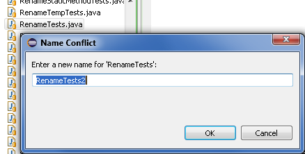
|
| New Ant icons |
The icons in Ant have been updated with some very nice new PNG versions.
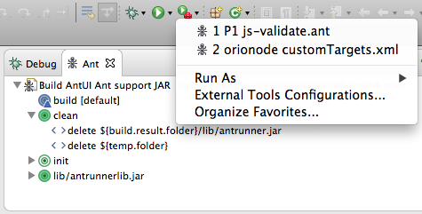
|
| Word wrap in the Console |
A new formatting option has been contributed to the Console view for all I/O consoles: Word Wrap.
The new option is available on the Console view toolbar and in the content popup menu within the Console view.
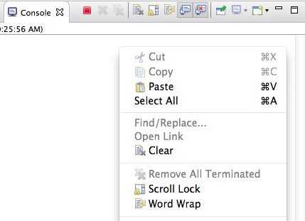
|
| UI responsiveness monitoring |
You can enable automatic detection of periods when the Eclipse user interface is unresponsive:

UI freezes longer than the warning threshold are logged to the Eclipse error log
as warnings. The logged messages include one or more stack traces of the display
thread. Longer UI freezes are logged as errors and include stack traces of all threads.
Please keep in mind that capturing stack traces of all threads involves extra
overhead, so setting the error threshold below 1 second is not recommended.
A UI freeze is logged at the end of the freeze or after the deadlock threshold has
expired, whichever comes first. The latter condition facilitates logging of indefinite
UI freezes caused by deadlocks.
Please file bugs for the UI freezes you encounter, describe what you were doing
at the time, and include the messages from the error log related to the freeze.
|
| 'Terminate/Disconnect All' in Console view |
You can invoke the Terminate/Disconnect All action from the Console view's context menu:
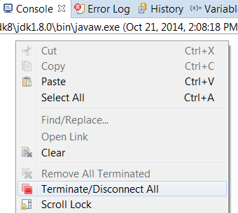
|
| Apply Patch... wizard more resilient |
Patches that have been created via "git format-patch" sometimes couldn't be
applied successfully using Eclipse's Team > Apply Patch... wizard.
Now, the wizard properly skips lines that are not part of an actual file diff section
(e.g. the --↵2.1.1 that Git appends).
|
| Assigning stdin to a file |
Stdin can now be assigned to a file in the "Common" tab of launch configuration dialogs.
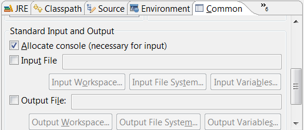
|
| Automatic scroll lock in Console view |
Scrolling up in the Console view using keys, mouse wheel, or scroll bar now automatically enables the Scroll Lock mode.
When you scroll down to the end of the console, the scroll lock is automatically released again.
|
| Console output limit |
Preferences > Run/Debug > Console > Console buffer size (characters)
is now only limited by the amount of characters the Console view can render.
The arbitrary limit of 1 million characters has been removed.
|
| GTK+ 3 used by default on Linux distributions (when installed and available) |
SWT and Eclipse will use the GTK+ 3 libraries by default on all Linux platforms,
whenever GTK+ 3 is installed and available (including GTK+ 3.10 and above).
You can force Eclipse to use GTK+ 2 port by setting the environment
variable SWT_GTK3 to 0 or using the launcher parameter --launcher.GTK_version flag in .ini file, if needed.
(For example: export SWT_GTK3=0)
|
| Dropped support for GTK+ 2 versions older than 2.18 in Eclipse launcher |
GTK+ 2.18.0 or later (and its dependencies) will be the pre-requisites necessary to
run Eclipse successfully on all Linux/UNIX platforms as opposed to GTK+ 2.10.0 earlier.
Support for all versions older than 2.18 has been dropped effective Mars M3 milestone release.
Note: As of now, Eclipse shows the following error dialog, which allows you to run even when
a GTK+ version older than 2.18.0 is detected. But that behavior will soon be changed to not run
Eclipse with unsupported GTK+ versions.
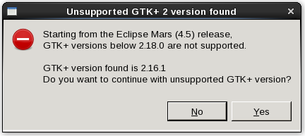
|
| Perspective Customization |
After 3 years of absence the Customize Perspective Dialog and Reset Perspective are back to Eclipse.
The dialog which allows to configure the visible menu, toolbar, action sets
and shortcuts was broken starting with Eclipse 4.2, together with the the ability to reset the perspective.
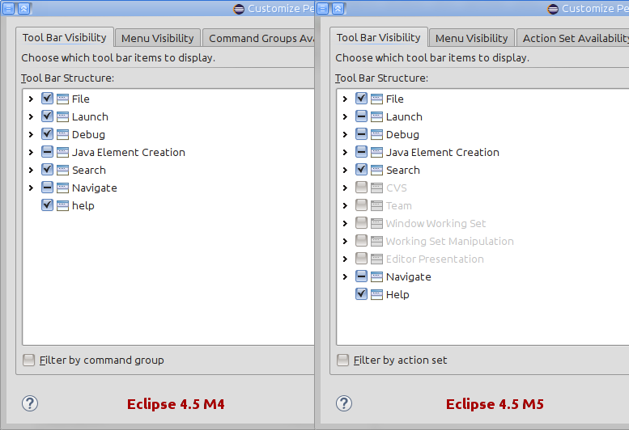
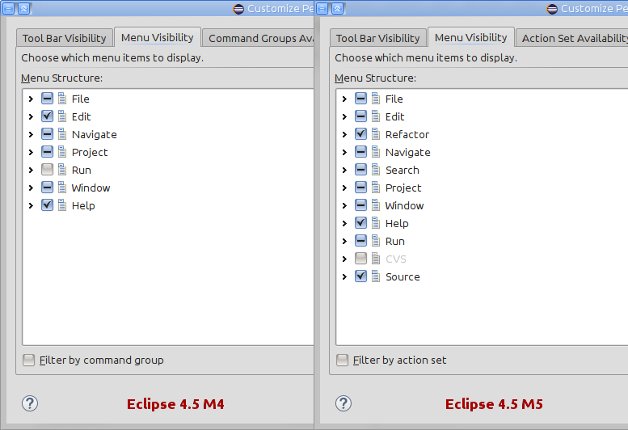
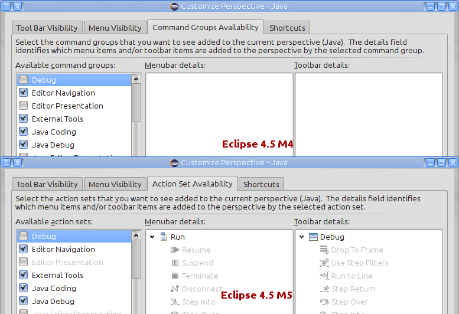
For more information see bug 420956.
|
| Nested/Hierarchical view of projects |
The Project Explorer now provides the ability to view the projects in a hierarchical (a.k.a. nested) form. For modular
projects, this allows to have your Project Explorer mapping more closely the organization of your modules as they are on the
file system. This hierarchical view of projects often makes easier to navigate modular projects.
Hierarchical view of projects can be triggered from the Project Explorer view menu, under the Projects Presentation item.

Then it makes the folders that are at the same location as a project replaced by the project, and the projects that are nested under
other projects will not be shown as root elements.
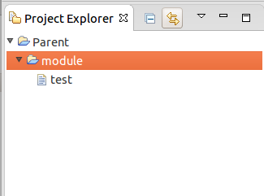
This implementation relies on the Common Navigator Framework.
|
| Workspace location in preferences |
The Workspace preference page now shows the current workspace path. In addition the path can be configured to appear in the
window title, a feature that previously was only available through the -showLocation command line argument.
This argument is still in effect and overrides the preference.
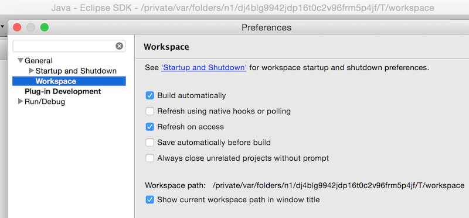
|
| Improved look for Forms based editors in the dark theme |
Using the new CSS capabilities in M5 to style the Section, the dark theme has been improved.
The following image demonstrates the old look of the Section title bar,
where the title bar had a hard coded white gradient.
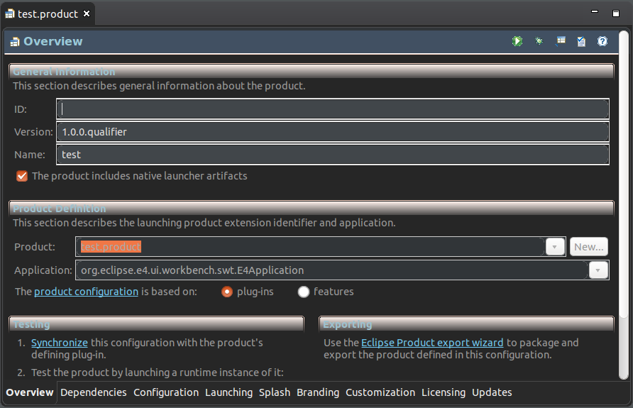
The following image demonstrates the new default look in the platform dark theme.
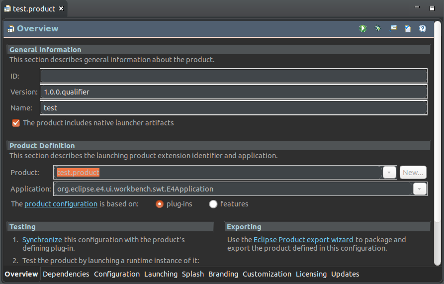
For more information see bug 430205.
|
| Text search speedup |
Text search has been sped up by a factor 3x-4x for full workspace searches on multi-core machines.
Text search now uses the JobGroup API added with Eclipse 4.5 (org.eclipse.core.runtime.jobs.JobGroup) to parallelize its processing.
For more information see bug 441016.
|
| Mac OS X distribution now an Application Bundle |
For Mars M6, the Eclipse SDK for OS X is now distributed in a more standard "Mac App" format,
instead of the "directory format" we have used in the past. See bug 431116
for background, current status, and pointers to remaining work planned.
CAUTION: Current Mac users can not use "update" to Mars M6. In fact,
for M6, doing so will break your installation! You need to start with a fresh download.
In the event that
you updated before reading this, and have ended up with a broken installation, see
Issues related to Mac App installations
for the steps to recover your installation, after getting a fresh download.
|
| Default max heap size increased to 1024 MB |
To improve the "out of the box" user experience on today's modern hardware,
the default maximum heap size (-Xmx VM argument) has been increased from 512M to 1024M.
And the initial heap size (-Xms) has been increased from 40M to 256M.
|
| Print button hidden by default |
The Print button on the main toolbar is now hidden by default.
The button can be added back to the toolbar via the Customize Perspective dialog.
To open this dialog, right-click on the current perspective button and select the Customize... menu item.
In the Tool Bar Visibility tab, expand File, select Print, and click OK.

|
| "Visible tabs shown on overflow" behavior decoupled from appearance theme |
In Eclipse 4.2, the non-"Classic" themes introduced a new strategy to select the editor tabs shown
when there's not enough screen space to show all tabs. The new strategy shows a sliding
window of tabs in their original opening sequence, cutting off tabs at the beginning and/or end of
the full sequence.
In classic versions of Eclipse (before 4.2, and later with a "Classic" theme), the strategy
was to show the most recently used tabs (MRU), i.e. the "working set" of tabs you're currently using.
The coupling of behavior with styling (themes) was found to be problematic, and the
tab visibility has has been turned into a separate preference. See
Preferences > General > Appearance > Show most recently used tabs.
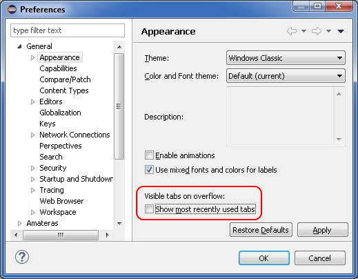
By default, the option is disabled. Users of a "Classic" theme need to enable it manually
to keep the behavior they're used to.
Plugin developers and Eclipse product owners can change via preferences whether
the CSS theme or a user preference should control this option, and
whether MRU should be enabled by default. The preferences are for the
"org.eclipse.e4.ui.workbench.renderers.swt" plug-in, and the keys are:
-
"MRUControlledByCSS" (default is "false"),
-
"enableMRUDefault" (default is "false"),
- "enableMRU" (default is "false").
|
| Improved "Open With..." dialog |
The Open With > Other... dialog now has
- a filter field
- options to remember the selected editor as default for the selected file name or type
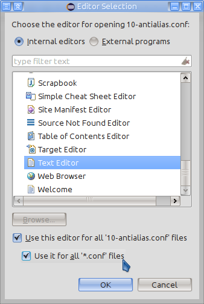
|
| "Open Resource" dialog can now filter duplicate resources. |
With the new Hierarchical view in the Project Explorer, it has
become more frequent to have multiple workspace projects with overlapping resource trees.
The Open Resource dialog has been enriched with a new option to allow hiding entries that
reference the same underlying resource, and to show only the most relevant.
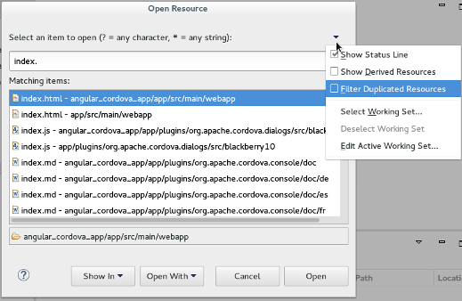
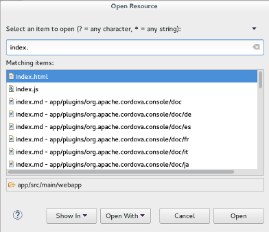
|